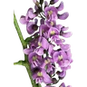

Plant Grimoire

BalchéNotes/Warnings
Records traditional Maya ceremonial use only. The fermented balché drink is extremely intoxicating and is not described here as a guide to its preparation or use.
Growing Season
Scientific Name
Also called
Balche, Lonchocarpus
Correspondences5
Balché is a tree held sacred by the Maya, prized above all as the source of a fermented ritual drink that bears the same name.
Folk Tradition
The bark of the balché was soaked in honey and water and poured into a canoe or another trough-shaped vessel to ferment, a process that began almost at once. The resulting mead-like drink is extremely intoxicating, and the Maya believed it to hold magickal powers.
Magickal Uses
The Maya drank balché in ritual, above all as an aid to solving problems. Because both the tree and the drink were held to be gifts from the Lord of Creation, it followed that he would help the people work together to resolve any matter that affected the tribe as a whole.